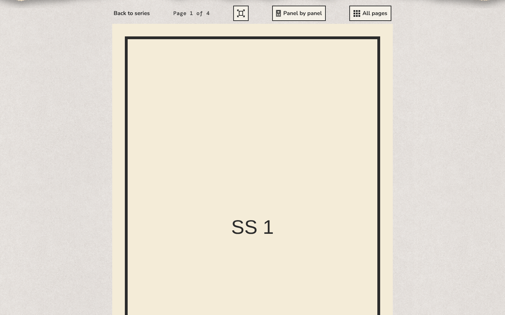
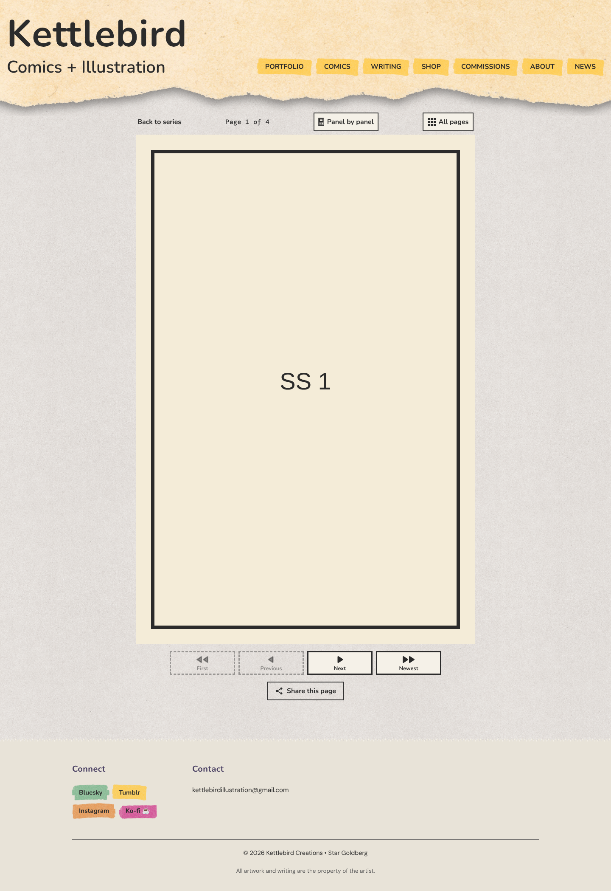
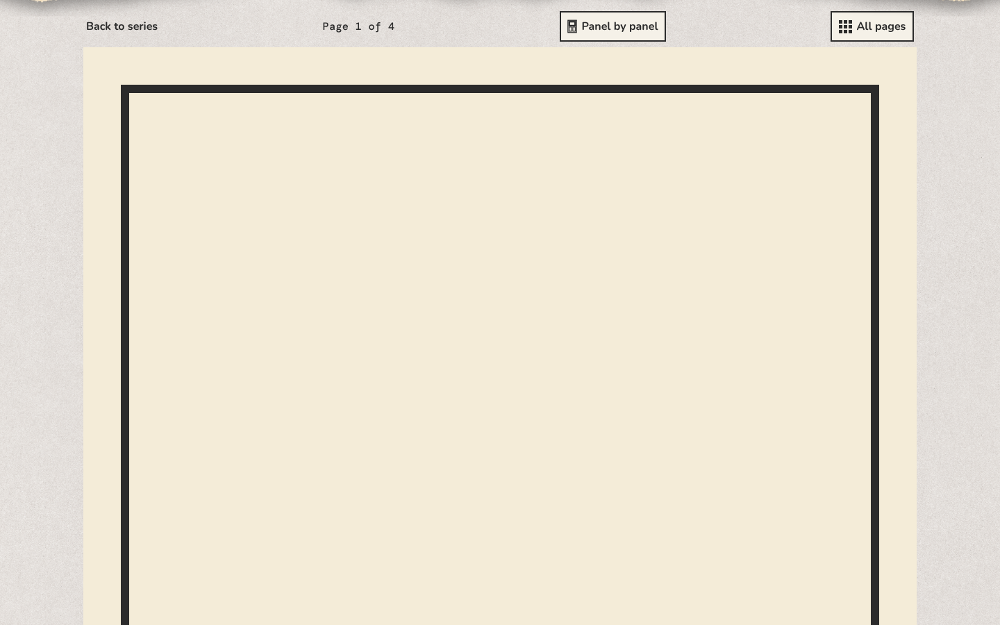
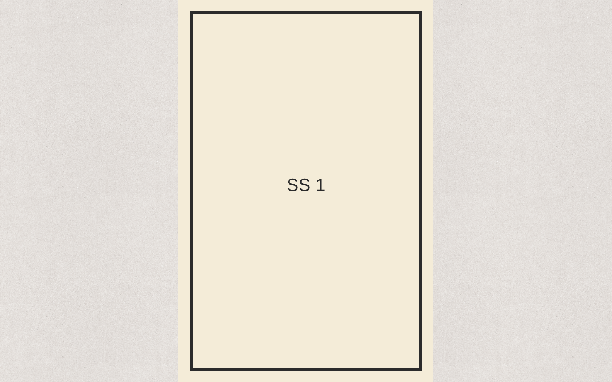
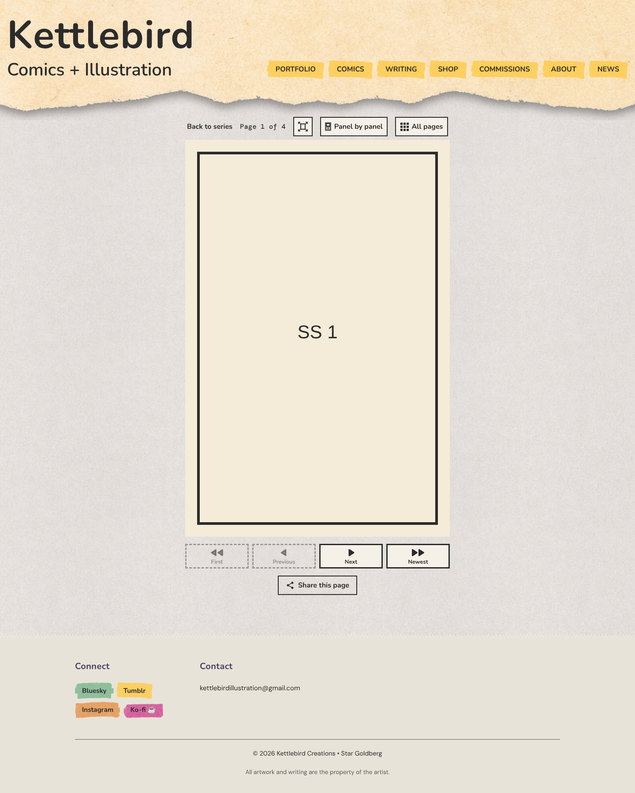
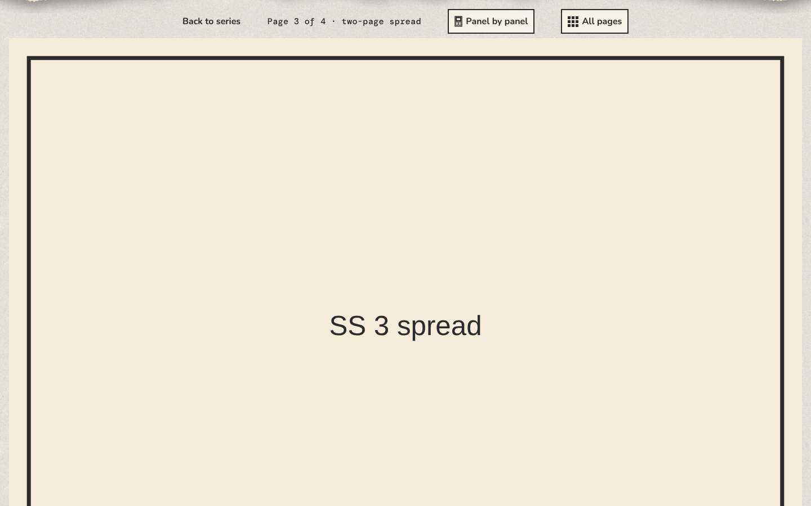
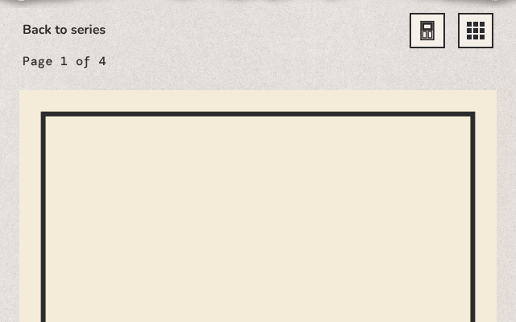
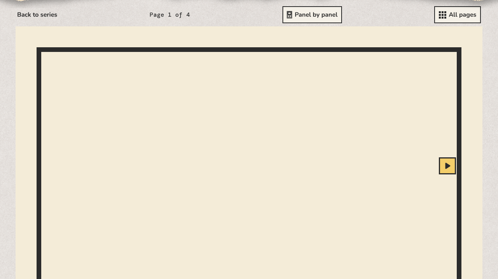

kettlebird.com/comics/single-sheets/1/1







On a laptop, or a tablet held sideways, show facing pages together, like an open comic. Off: one page at a time on every screen.
Turn pages with an animation of a page turning over. Off: pages change at once.
How big each page shows on a laptop or desktop, one page at a time. Phones and tablets always fit the screen.
The whole page and the buttons show at once, without scrolling, as now. On a 1440 × 900 laptop a page is about 470 pixels wide.
Each page shows as wide as its picture, or as Largest page width, narrowed to fit the window. Readers scroll down each page to the buttons.
Each page's height matches the window's, never wider than its picture or Largest page width. Readers scroll up to Back to series and the page number, and down to the buttons.
In screen pixels. A number wider than a page's picture enlarges the picture, and it may look soft. Leave it empty to show each page no wider than its picture. A two-page spread shows up to twice this. Fit the screen ignores it.
This comic's pages are 800 pixels wide, and its spread 1600. On sharp (high-density) screens, a picture looks sharpest at half its width or less.
Preview a chapter to see how it reads. The preview at Computer is a 1280 × 800 laptop, shown smaller to fit beside the editor.
Two pages side by side is on for this comic, so this has no effect: pairs fit the screen. Untick it to read one page at a time at this size.
Two pages side by side is on for this comic, so this has no effect.
Choose a whole number of pixels between 400 and 3200, or leave it empty.

